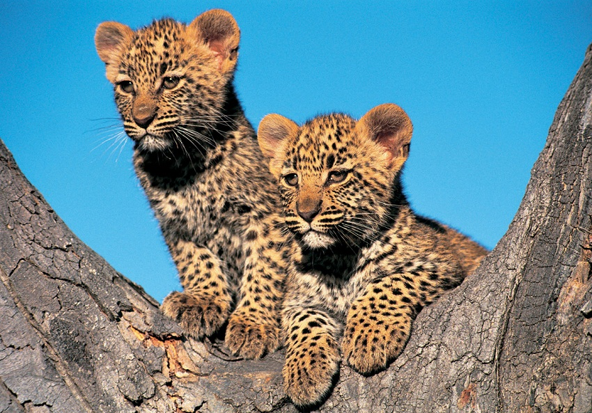

Leopard
The African leopard (Panthera pardus pardus) is the nominate
subspecies of the leopard, native to many countries in Africa. It is
widely distributed in most of sub-Saharan Africa, but the historical
range has been fragmented in the course of habitat conversion.[3]
Leopards have also been recorded in North Africa as well.

The African leopard exhibits great variation in coat color,
depending on location and habitat. Coat colour varies from pale
yellow to deep gold or tawny, and sometimes black, and is patterned
with black rosettes while the head, lower limbs and belly are
spotted with solid black. Male leopards are larger, averaging 58 kg
(128 lb) with 90 kg (200 lb) being the maximum weight attained by a
male. Females weigh about 37.5 kg (83 lb) on average.

The African leopard is sexually dimorphic; males are larger and
heavier than females.[15] Between 1996 and 2000, 11 adult leopards
were radio-collared on Namibian farmlands. Males weighed 37.5 to
52.3 kg (83 to 115 lb) only, and females 24 to 33.5 kg (53 to 74
lb).[16] The heaviest known leopard weighed about 96 kg (212 lb),
and was recorded in South West Africa.